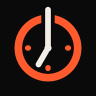
Alarm Clock: Actually Up
An alarm that stops after you walk · App Store · updated 14 November 2026
What is new
Version 1.2 adds a test alarm to the first run: it rings 5 seconds after you start it and stops once you have walked, so the first morning is not the first time you meet the alarm. The free plan now keeps one alarm ringing with the phone walk and one follow-up, where 1.1 paused alarms without Pro. The alarm editor has a Sound section with three tones (siren, buzzer, bell) next to the classic sound, each with a preview.
Facts
- Version
- 1.2 (build 2026111401), built with Xcode 27.1
- Platforms
- iPhone, with an Apple Watch app
- Languages
- 20, including English (US, UK, Australia, Canada), Spanish (Mexico and Spain), German, French, Japanese, Korean, Portuguese (Brazil), Italian, Chinese (Simplified and Traditional), Russian, Turkish, Dutch, Arabic, Hindi and Indonesian
- Price
- Free. One alarm, the phone walk and one follow-up need no purchase. Pro adds up to six alarms, the other checks and the full follow-up chain.
- Privacy
- No account. Step counts are read on the device to stop the alarm.
- Accessibility
- The test alarm countdown has a VoiceOver label, the first-run animation respects Reduce Motion, and the alarm editor adapts its day picker to Dynamic Type.
- Window
- 7 to 20 December 2026
- Developer
- One developer in Dubai
Version 1.3 (submitted 20 November 2026)
Four new ways to stop the alarm: three sums on a number pad, 30 shakes, a photo of a spot matched on the device, and any product barcode. A "Still up?" ring 5 minutes after the alarm is stopped, and sleep sounds with a timer. Simulator captures of the 1.3 build.
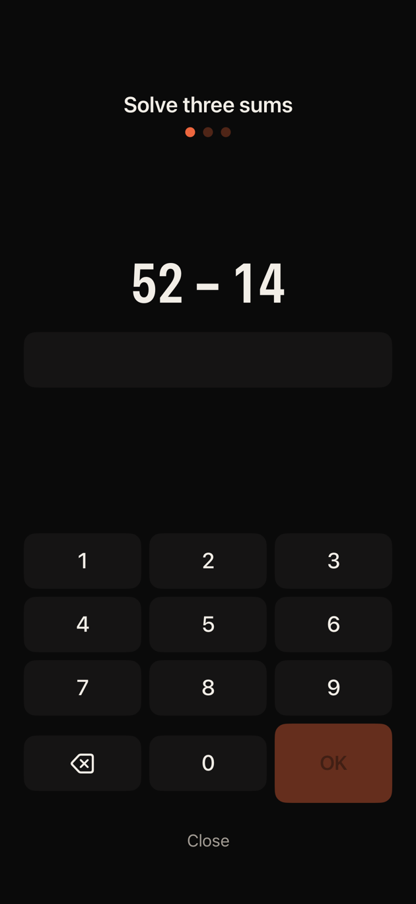
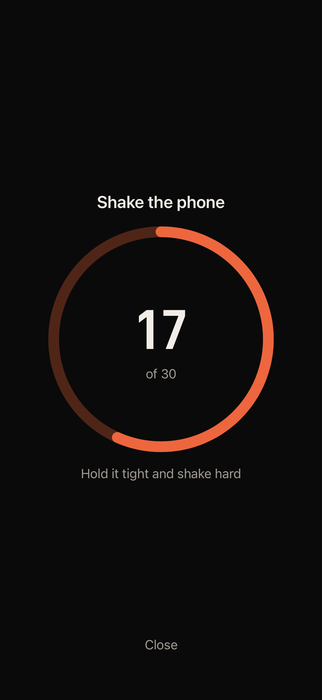
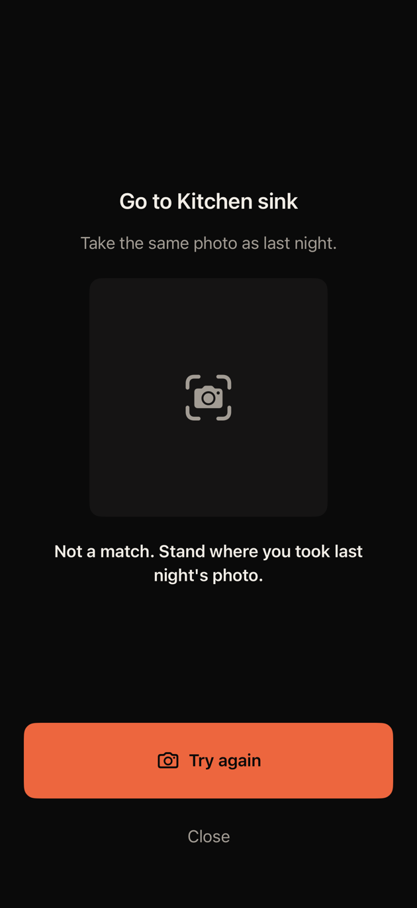
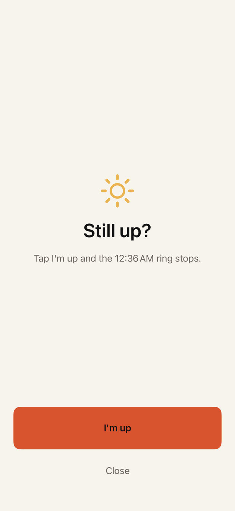
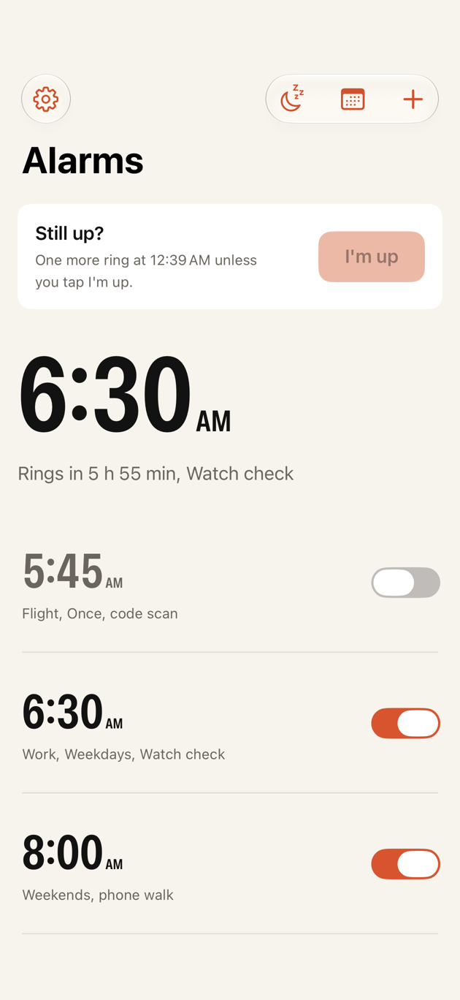
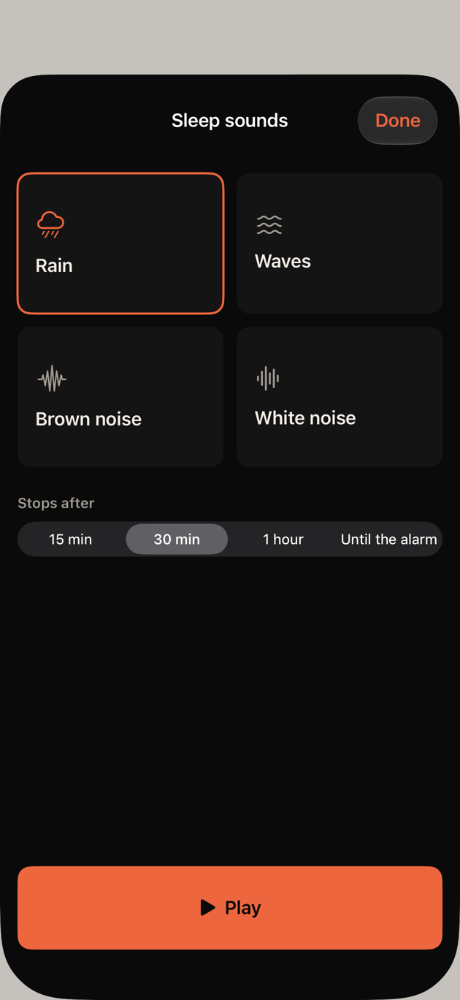
Screens
Simulator captures (iPhone Air, iOS 27) of the screens described in the nomination. No marketing frames.
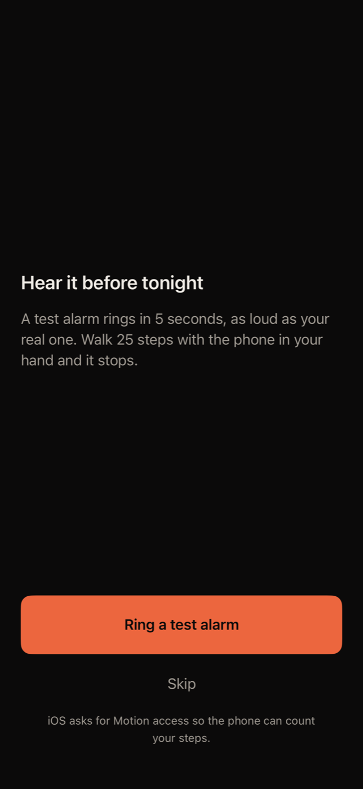
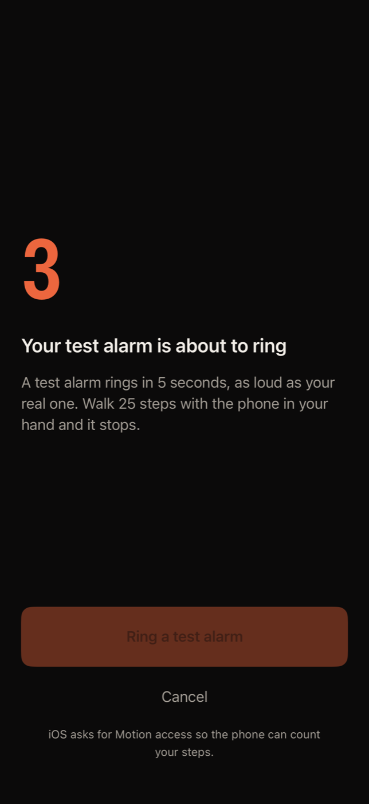
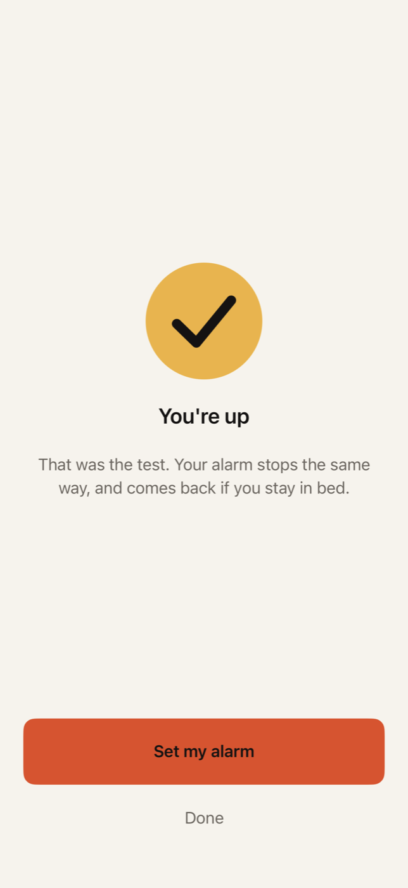
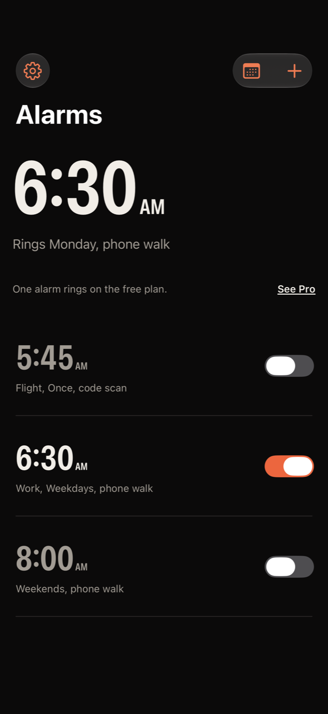
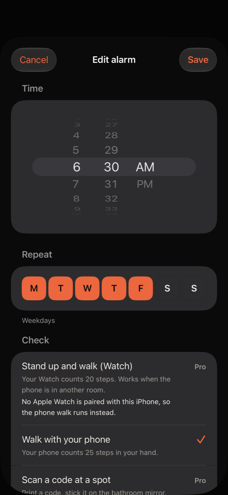
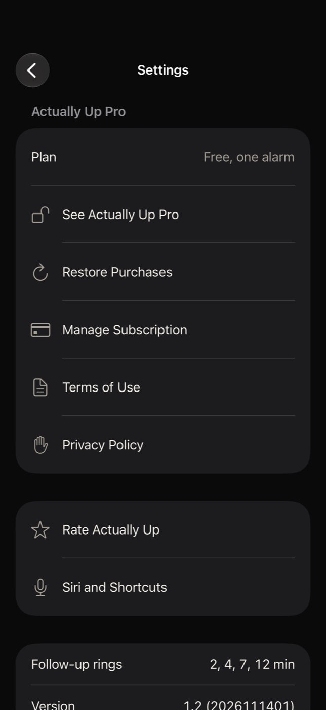